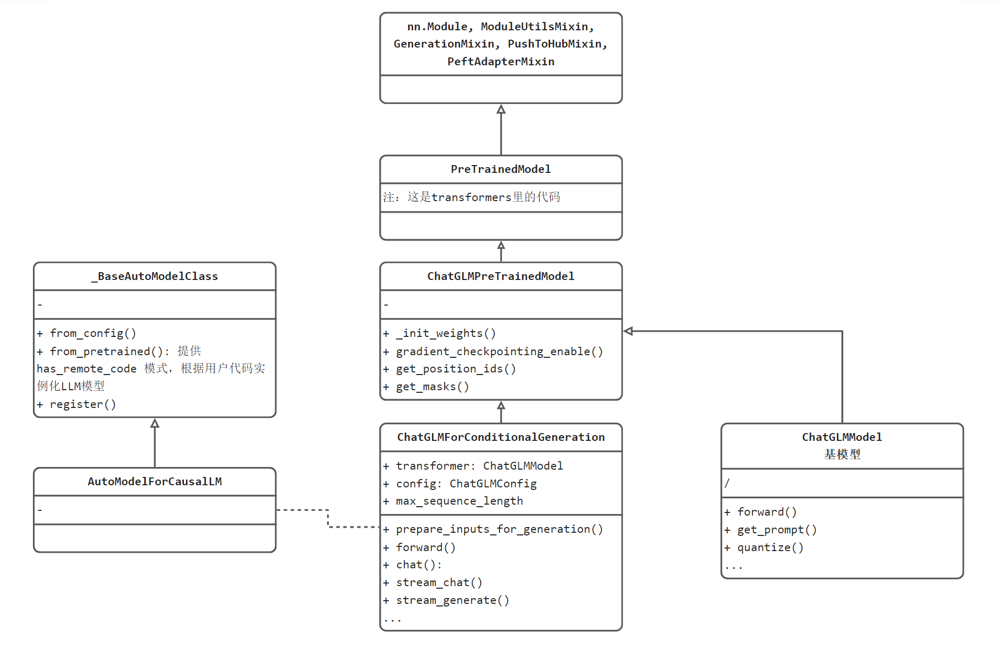
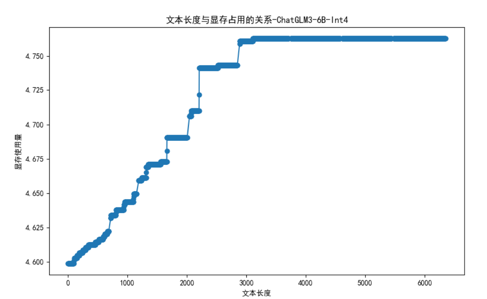

10.2 ChatGLM3 部署与分析
前言
本小节介绍国内大模型开源界的先驱，ChatGLM，其提供了多种开源大模型，以及工具调用功能。
本节将介绍ChatGLM发展历史，模型结构，prompt分析，显存分析等内容，帮助大家理解ChatGLM。
ChatGLM 简介
ChatGLM是由北京智谱华章科技有限公司开发的基于GLM（General Language Model ）的对话模型。
ChatGLM目前（2024年4月16日）已发展到v4（未开源），其中v3版已开源，并且获得相当高的关注。
ChatGLM开源方面主打性价比，目前只有一个尺寸6B，但支持32K，128K不同上下文长度的版本。
智谱华章（智谱AI）公司2019年胎于清华大学的知识工程实验室（KEG），其技术和产品的发展与清华大学的研究成果紧密相关。清华大学的背景为智谱AI提供了强大的学术和技术支持。
除了ChatGLM，智谱AI还有CogVLM 、 CogAgent和CharacterGLM的开源，为人工智能开源社区的发展提供了帮助。产品方面，推出三大系列，大模型、AMiner学术情报收集、数字人产品。
智谱华章的价值观也非常好——让机器像人一样思考。
智谱的技术背景历史相对其他开源模型是比较长的，早在ChatGPT爆火之前，他们就已经发表了相关的文章，如2021年3月发表的《GLM: General Language Model Pretraining with Autoregressive Blank Infilling》(https://arxiv.org/pdf/2103.10360.pdf)、2022年10月发表的《Glm-130b: An open bilingual pre-trained model》（https://arxiv.org/pdf/2210.02414.pdf）
更多智谱AI信息可关注：
- github：https://github.com/THUDM/ChatGLM3
- HF主页：https://huggingface.co/THUDM/
- 官方文档：https://zhipu-ai.feishu.cn/wiki/WvQbwIJ9tiPAxGk8ywDck6yfnof
- 官方博客：https://zhipuai.cn/devday
- 公司首页：https://www.zhipuai.cn/
本地部署安装
接下来就来本地化部署ChatGLM3-6B模型，试试效果
版本说明
ChatGLM3本地部署安装不复杂，首先看官方建议的环境要求：
huggingface_hub>=0.19.4
pillow>=10.1.0
pyyaml>=6.0.1
requests>=2.31.0
ipykernel>=6.26.0
ipython>=8.18.1
jupyter_client>=8.6.0
本案例环境详情：
- Win11 、 RAM 32GB、RTX 4060 Laptop 8GB
- Python 3.10.14
- transformers 4.38.2
- pytorch 2.2.0
- CUDA 12.1
操作步骤
第一步，下载代码仓库
git clone https://github.com/THUDM/ChatGLM3.git
第二步，下载模型
模型除了权重文件，还有一系列配置文件等信息，因此需要完整的文件下载才可使用，鉴于网络问题，这里介绍两种下载方式：
方式一：纯命令行（拼网速）
git clone https://www.modelscope.cn/ZhipuAI/chatglm3-6b.git
or
git clone https://huggingface.co/THUDM/chatglm3-6b
方式二：命令行+ 手动下载权重文件
git clone https://www.modelscope.cn/ZhipuAI/chatglm3-6b.git
首先，查看文件夹下配置文件是否下载完毕，下载完毕后，ctrl + c停止。
然后，可手动下载.safetensors文件，放到文件夹中，手动下载.safetensors文件，速度高达10+MB/s
第三步，环境安装
pip install -r requirments.txt
第四步，设置模型路径
ChatGLM3\basic_demo\cli_demo.py中，修改
MODEL_PATH = r"G:\04-model-weights\chatglm\chatglm3-6b"
TOKENIZER_PATH = r"G:\04-model-weights\chatglm\chatglm3-6b"
如果需要int4量化，则修改以下代码（不量化，需要7.9GB加载，int4量化，需要4.7GB加载）
model = AutoModel.from_pretrained(MODEL_PATH, trust_remote_code=True).quantize(bits=4, device="cuda").cuda().eval()
# add .quantize(bits=4, device="cuda").cuda() before .eval() to use int4 model
第五步，运行代码
进入虚拟环境，运行basic_demo\cli_demo.py， terminal中显示如下信息表明加载成功，加载完成后，显存占用4678MB。
C:\Users\yts32\anaconda3\envs\chatglm\python.exe D:\github_desktop\ChatGLM3\basic_demo\cli_demo.py
Setting eos_token is not supported, use the default one.
Setting pad_token is not supported, use the default one.
Setting unk_token is not supported, use the default one.
Loading checkpoint shards: 100%|██████████| 7/7 [00:16<00:00, 2.34s/it]
欢迎使用 ChatGLM3-6B 模型，输入内容即可进行对话，clear 清空对话历史，stop 终止程序
用户：你好
你好👋！我是人工智能助手 ChatGLM3-6B，很高兴见到你，欢迎问我任何问题。
用户：
对于6B模型，笔记本级显卡就非常慢，已经到达用户无法接受的程度，解码时延约1.5s/token，通常LLM服务的解码时延在50ms。
这或许与代码有关，在baichuan2的7B-int4模型中，速度还是合理的。
模型结构分析
为了详细了解ChatGLM3模型代码的设计结构，接下来分析模型UML类图结构。
首先关心的是，模型在哪里创建的，是什么形式，这个可从ChatGLM3\basic_demo\cli_demo.py的12行代码看到
model = AutoModel.from_pretrained(MODEL_PATH, trust_remote_code=True).quantize(bits=4, device="cuda").cuda().eval()
这里基于transformers库的规则采用AutoModel类的接口进行模型初始化，内部实际调用为用户自定义的模型类。
最终调用的是C:\Users\yts32.cache\huggingface\modules\transformers_modules\chatglm3-6b\modeling_chatglm.py当中的ChatGLMForConditionalGeneration。
其内部关系如下图所示：

UML类图分两部分
左边的_BaseAutoModelClass和AutoModelForCausalLM是transformers库的标准设计，基于transformers推理的LLM需要遵循这套规则。
右边则是ChatGLM的代码结构设计，包括：
- ChatGLMForConditionalGeneration：提供用户使用的类，有stream_chat、chat这两个对话接口
- ChatGLMPreTrainedModel：所有预训练模型基类，提供通用接口，如get_position_ids、get_masks
- ChatGLMModel：LLM基模型，在ChatGLMForConditionalGeneration中被实例化为transformer属性，可理解为一个神经网络模型。
- 再往上，就是transformers库的基础类了，包括PreTrainedModel、nn.Module, ModuleUtilsMixin, GenerationMixin, PushToHubMixin, PeftAdapterMixin。这些都是基础的必备模块。可以看到熟悉的pytorch的nn.Module，以及一系列Mixin类。
补充知识：Mixin类是一种设计模式，表示一些通用的功能放到这里，其他需要此功能的模块，通过继承的方式将这些共同行为混入到其他类中。
流式推理流程分析
cli_demo.py采用的是流式返回，推理流程在.cache\huggingface\modules\transformers_modules\chatglm3-6b\modeling_chatglm.py 中ChatGLMForConditionalGeneration.stream_generate()
LLM输出的过程采用while循环进行控制，当达到停止条件时，break跳出循环。
下面分析stream_generate()中while循环里的代码，可以分为四个步骤
- 获取LLM的输入，执行推理，即outputs = self(xxx)
- 采样，获取本次推理得到的tokens
- yield 抛出结果
- 判断是否已停止，对于生成器而言，下一次进入循环会到yield之后的代码。
while True:
# ================================== step1 ==================================
# 获取LLM模型需要的输入，例如，input_ids, position_ids, att_mask等
model_inputs = self.prepare_inputs_for_generation(input_ids, **model_kwargs)
# forward pass to get next token
# LLM 模型的一次推理，输出1个向量，在此处为 1*65024维的向量，表明词表大小为65024。
outputs = self(
**model_inputs,
return_dict=True,
output_attentions=False,
output_hidden_states=False,
)
# ================================== step2 ==================================
next_token_logits = outputs.logits[:, -1, :]
# pre-process distribution
next_token_scores = logits_processor(input_ids, next_token_logits)
next_token_scores = logits_warper(input_ids, next_token_scores)
# sample
probs = nn.functional.softmax(next_token_scores, dim=-1) # 未采用温度惩罚
if generation_config.do_sample:
next_tokens = torch.multinomial(probs, num_samples=1).squeeze(1) # 这里采用top-p=1
else:
next_tokens = torch.argmax(probs, dim=-1)
# update generated ids, model inputs, and length for next step
input_ids = torch.cat([input_ids, next_tokens[:, None]], dim=-1)
model_kwargs = self._update_model_kwargs_for_generation(
outputs, model_kwargs, is_encoder_decoder=self.config.is_encoder_decoder
)
unfinished_sequences = unfinished_sequences.mul(
next_tokens.tile(eos_token_id_tensor.shape[0], 1).ne(eos_token_id_tensor.unsqueeze(1)).prod(dim=0)
)
# ================================== step3 ==================================
if return_past_key_values:
yield input_ids, outputs.past_key_values
else:
yield input_ids
# ================================== step0 ==================================
# stop when each sentence is finished, or if we exceed the maximum length
if unfinished_sequences.max() == 0 or stopping_criteria(input_ids, scores):
break
prompt结构分析
ChatGLM3 prompt结构由对话头和内容组成，一个典型的多轮对话结构如官方文档所示：
<|system|>
You are ChatGLM3, a large language model trained by Zhipu.AI. Follow the user's instructions carefully.
<|user|>
Hello
<|assistant|>
Hello, I'm ChatGLM3. What can I assist you today?
对比Qwen的结构如下：
<|im_start|>system
You are a helpful assistant.<|im_end|>
<|im_start|>user
你是谁<|im_end|>
<|im_start|>assistant
ChatGLM3 为了支持Code Interpreter，Tool & Agent 等任务的输入，还增加了一个角色，总共支持四种角色，具体是：
<|system|>：系统信息，设计上可穿插于对话中，但目前规定仅可以出现在开头
<|user|>：用户 不会连续出现多个来自 <|user|> 的信息
<|assistant|>：AI 助手 在出现之前必须有一个来自 <|user|> 的信息
<|observation|>：外部的返回结果 必须在 <|assistant|> 的信息之后
<|observation|>的加入，使得ChatGLM3具备更丰富的功能，可以让LLM加上“四肢“，让大模型学会使用工具。
工具功能是一种扩展机制，它允许大模型通过调用外部工具来增强自身的能力，解决一些由于训练数据限制或专业领域知识缺乏而无法独立完成的任务。
常用的工具有计算器、搜索引擎、天气查询等，这个部分设计Agent的内容，此处暂不展开。
显存使用与上下文长度分析
本案例中并未能正确分析出上下文长度与显存占用的情况，出现了一些奇怪现象，这里总结如下：
- int4 启动需要4.6GB显存
- 上下文增加到3000时，显存仅增加了100MB
- 上下文超3500之后，显存不再增加，应该与上下文截断有关
- 
此处，未进一步查看源代码寻找原因，毕竟这里是demo，生产部署会采用其他推理框架。
在cli_demo.py代码后加入如下代码，可进行统计，完整代码位于github
# 统计文本长度
conversation_length = sum([len(content['content']) for content in history])
import subprocess
import json
result = subprocess.run(['gpustat', '--json'], stdout=subprocess.PIPE)
output = result.stdout.decode()
data = json.loads(output)
used_memory = data['gpus'][0]['memory.used']
f.writelines("{}, {}\n".format(conversation_length, used_memory))
f.flush()
在此处用的是文本长度，而不是tokens长度，是因为代码接口返回的只有文本，没有tokens_ids，但不影响分析结果的趋势。
小结
本节详细介绍了ChatGLM的背景与本地部署实战，包括以下核心内容：
- ChatGLM3模型介绍，是基于GLM（General Language Model）的对话模型，目前发展到v4版本，v3版本已开源，获得相当高的关注
- 本地部署ChatGLM3-6B模型详细步骤，包括环境配置介绍
- ChatGLM3-6B模型结构分析：对ChatGLM3的模型结构进行了详细分析，包括其类图结构、流式推理流程以及prompt结构等
- 显存分析：分析了显存使用与上下文长度的关系
下一节将介绍百川2的本地部署